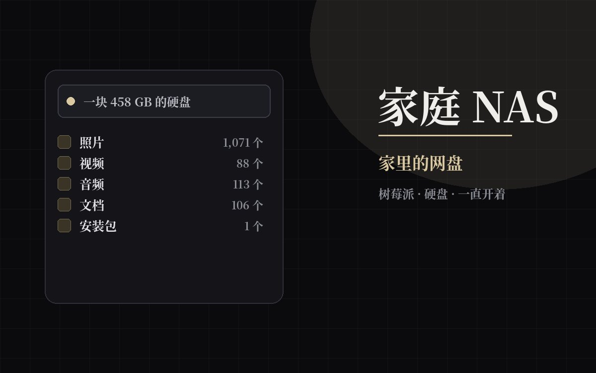

家庭 NAS（家里的网盘）
一块 458 GB 的硬盘接在树莓派上，就成了家里的网盘。手机、电脑连上家里的 Wi-Fi， 就能打开它，里面按类别分好了一个个文件夹：照片、视频、音乐、文档、安装包各归各的格子。 不用交月费，东西也没传到别人家的服务器上——就在我自己屋里。 这台机器上还跑着我自己写的一个相册网页，和几个小应用。

它是什么
一台一直开着的小电脑（树莓派），加一块硬盘。打个比方：硬盘是仓库，树莓派是管仓库的人—— 它把东西分门别类摆到架子上，而且只把门开给家里的设备。
| 硬盘 | 一块 458 GB 的硬盘。设置成开机自动挂上，断电重启不用我手动处理 |
|---|---|
| 主机 | 树莓派，就是我做这个网站、以前跑 QQ 机器人用的那台小机器 |
| 怎么打开 | 手机或电脑连上同一个 Wi-Fi，电脑在“网络”里、手机在文件管理里就能看到，不用装东西 |
| 谁能看到 | 只有连着家里网络的设备；共享文件夹本身不对外开放 |
| 花钱吗 | 硬盘是一次性买的，软件都是免费的，没有月费 |
里面装了什么
“家庭共享”这个文件夹按类型分成五格。下面的数字是 2026 年 9 月 23 日数出来的：
| 照片 | 1,071 个文件，3.3 GB——数量最多的一类 |
|---|---|
| 视频 | 88 个文件，7.5 GB——按体积算最大的一类 |
| 音频 | 113 个文件，2.7 GB |
| 文档 | 106 个文件，24 MB |
| 安装包 | 1 个文件，94 MB——一个安卓 App，留着是为了下次有人要装的时候不用重新下载 |
| 相册网页 | 35 MB——我自己写的那个相册网页，照片和证书都放在这儿 |
上面跑着什么
除了存文件，这台小机器还负责跑几个服务。现在开着两个，另外三个是装过、试过之后放着的。
| 相册网页 | 开着。我自己写的一个网页，家里人用浏览器就能看照片，不用一层层翻文件夹 |
|---|---|
| 统一入口 | 开着。Nginx Proxy Manager——把几个不同的服务收到一个门口，不用挨个记地址 |
| Minecraft 服务器 | 停着。搭了一个 Minecraft 服务器，和朋友一起玩过；现在没人玩 |
| 远程桌面中继 | 停着。RustDesk——从外面连回自己电脑用的；现在用不上 |
| 元搜索 | 停着。SearXNG——一个把好几家搜索结果汇总到一起、且不跟踪你的搜索页 |
开着的那两个和停着的那三个，都是现成的软件装上去的（通过一个叫 CasaOS 的应用商店），不是我写的程序； 我负责挑、配置，剩下的交给它们自己。
有件事我想先说清楚
在这台机器上，硬盘本身就是最容易出事的地方：只有一块盘，它一旦坏掉，里面的照片和视频就一起没了； 把文件再复制一份到同一块盘的另一个文件夹也不管用——还是同一块硬件。 真正的备份得放在另一块盘、或者另一台机器上。